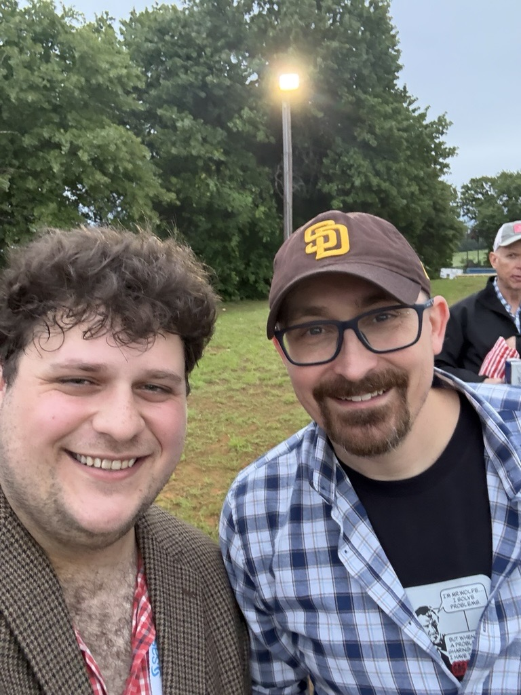
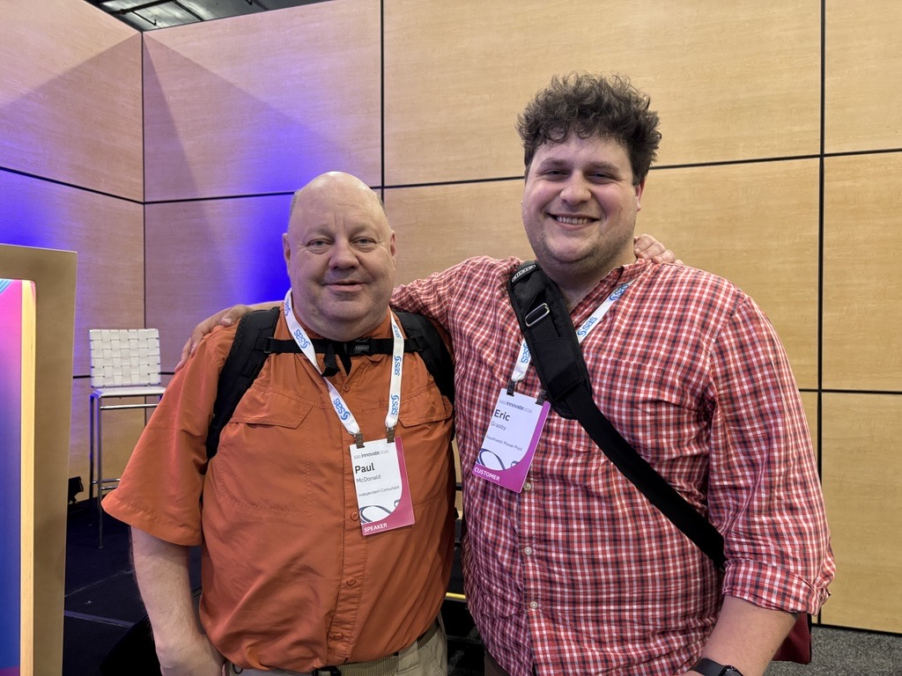
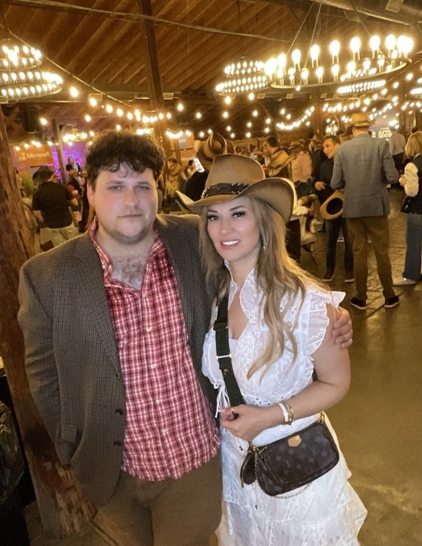
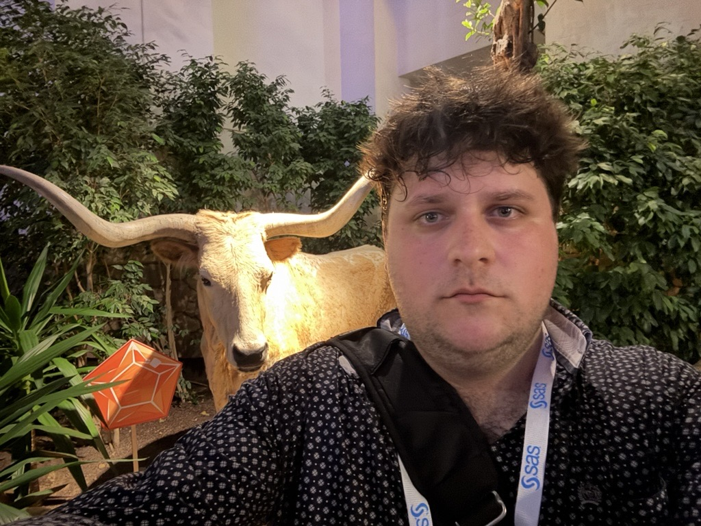
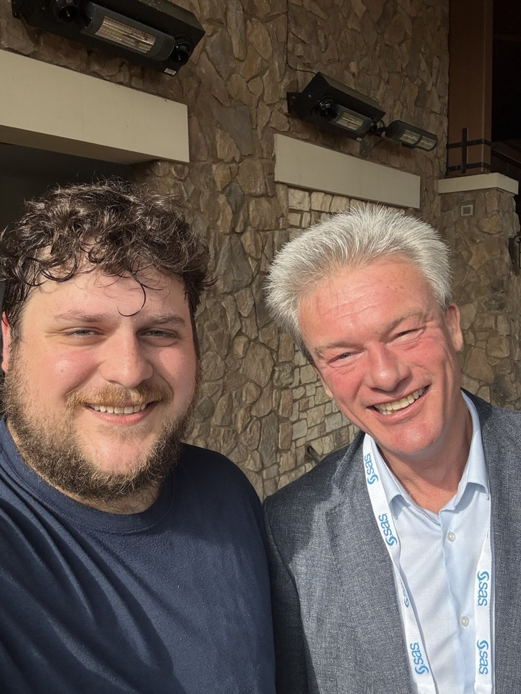
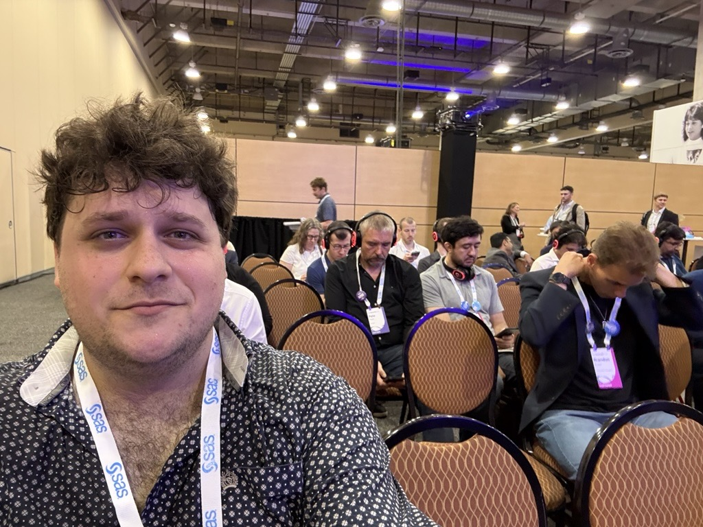
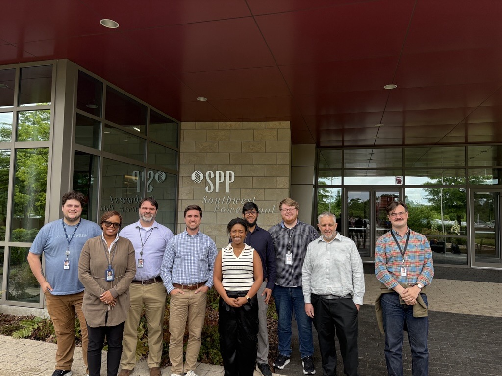

It was pretty inspiring to meet all of these people from both across the US and across the world -- all meeting up just to geek out about the neat things that they are doing with SAS.



Some other miscellaneous pictures; the most important of which is the pic of me with Patrick Xhonneux. He's an all around great guy from SAS. We met at the last Innovate conference and bumped into each other on the Monday morning before Innovate 2026 began. He and I had breakfast together and I enjoyed getting to catch up with him. He's a model of a European gentleman!

In order from left to right, Eric Grasby (myself), Andrea Doucette, Mark Rouse, Brock Frisbie (account manager), Danielle Benson (customer success rep), Muneeb Mohammad (our SAS assigned Data Scientist), Patrick "Pat" Chida, Michael Slade (a technical architect from SAS), and Ian Wren.